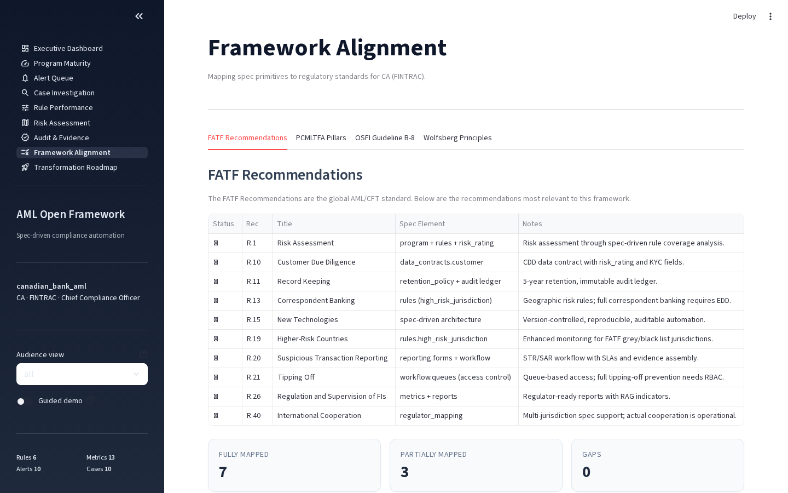

Multi-Jurisdiction Support¶
The framework supports geo-based default policies — the same architecture adapts to different regulatory regimes based on the jurisdiction field in aml.yaml. The dashboard Framework Alignment tab switches CA/EU specially; other jurisdictions fall back to FinCEN BSA-style tabs. Regulator export formats are per-jurisdiction: goAML (FATF/FINTRAC), CA-FINTRAC audit pack, and AMLA RTS draft (EU — non-submittable pending final RTS). See the individual export commands in the API/CLI reference.
Bundled Example Specs¶
| Spec | Jurisdiction | Regulator | Filing Types |
|---|---|---|---|
examples/community_bank/aml.yaml |
US | FinCEN | SAR, CTR |
examples/canadian_bank/aml.yaml |
CA | FINTRAC | STR, LCTR, EFTR |
examples/canadian_schedule_i_bank/aml.yaml |
CA | FINTRAC + OSFI | STR, LCTR (TD case-study patterns) |
examples/eu_bank/aml.yaml |
EU | EBA | EU STR (AMLD6) |
examples/uk_bank/aml.yaml |
UK | FCA | UK SAR (POCA 2002) |
examples/cyber_enabled_fraud/aml.yaml |
US | FinCEN/FATF | SAR + investment-scam typology |
examples/crypto_vasp/aml.yaml |
Cross-border | FATF R.16 / FinCEN / FINTRAC | VASP STR/SAR (network_pattern + Travel Rule) |
examples/trade_based_ml/aml.yaml |
US | FinCEN + FATF/Egmont | SAR with TBML typology indicators (Round-7) |
examples/uk_app_fraud/aml.yaml |
UK | FCA + PSR + NCA | UK SAR + PSR reimbursement decision (Round-7) |
examples/us_rtp_fednow/aml.yaml |
US | FinCEN / RTP / FedNow | RTP/FedNow push-fraud detector pack (Round-8) |
All ten execute the same engine; the jurisdictional differences live in:
- the regulation_refs citations on each rule
- the workflow queue names + filing forms
- the dashboard's Framework Alignment tab content
- the export format (goAML for FATF/FINTRAC/generic, AMLA RTS draft for EU)
United States — FinCEN / BSA¶
The US specs (community_bank, cyber_enabled_fraud) align with:
- 31 CFR 1010 — Bank Secrecy Act recordkeeping and reporting requirements
- FinCEN's 2024 effectiveness rule + 2026 supervisory guidance — measures program effectiveness in terms of investigations, not raw alert counts (drives the investigation aggregator)
- FinCEN BSA 6 Pillars including the April 2026 proposed 6th pillar (formalized risk assessment)
- OFAC SDN list screening via the
list_matchrule type - FinCEN advisories (FIN-2014-A005 cash-to-wire, FIN-2023-Alert005 pig-butchering, FIN-2006-A003 unusual volume)
Filing forms: SAR (Suspicious Activity Report) and CTR (Currency Transaction Report) for cash >$10,000.
Canada — FINTRAC + OSFI¶
The Canadian specs (canadian_bank, canadian_schedule_i_bank) align with:
- PCMLTFA (Proceeds of Crime Money Laundering and Terrorist Financing Act) and PCMLTFR — every rule citation references a specific section (e.g.,
PCMLTFA s.11.1for structuring,PCMLTFR s.7(1)for LCTR obligations) - FINTRAC reporting forms — STR (Suspicious Transaction Report), LCTR (Large Cash Transaction Report >CAD 10,000), EFTR (Electronic Funds Transfer Report >CAD 10,000)
- OSFI Guideline B-8 — enhanced expectations for federally regulated institutions: board oversight, automated monitoring, sanctions integration
- PCMLTFR s.132 — 24-hour aggregation rule for cash transactions
- 5-year retention for all records (PCMLTFR s.144-145)
The dashboard's Framework Alignment page automatically shows PCMLTFA Pillars and OSFI Guideline B-8 tabs instead of FinCEN BSA Pillars when running with a Canadian spec:

aml dashboard examples/canadian_bank/aml.yaml
aml dashboard examples/canadian_schedule_i_bank/aml.yaml # TD case-study patterns
The canadian_schedule_i_bank spec encodes the patterns FINTRAC cited in its 2024 enforcement actions against TD (CAD 9.2M penalty) — repeated PEP transactions, structuring at the LCTR threshold, dormant-account reactivation. Useful as a reality-check for Big-six Canadian programs.
European Union — EBA / AMLD6¶
The EU spec (eu_bank) aligns with:
- AMLD6 (Directive 2018/1673) — criminal liability for money laundering, expanded predicate offenses
- EBA AML/CFT Guidelines — risk-based approach, EDD triggers, customer due diligence
- EU Regulation 2023/1113 (Transfer of Funds) — EU implementation of FATF R.16 Travel Rule
- AMLA (Anti-Money Laundering Authority, operational July 2026) — direct supervision of high-risk cross-border institutions
- AMLA RTS draft (July 2026) — STR submission format
Spec includes:
- 7 detection rules covering structuring, high-risk-jurisdiction, PEP screening, rapid-movement, sanctions, FATF R.16 travel-rule completeness, and INVS pig-butchering
- ISO 20022 purpose_code column on the txn data contract for the typology library snippets
- 5-year retention per GDPR + AMLD6 art. 40
The framework ships a goAML 5.0.2 exporter (aml export-goaml) and an AMLA RTS JSON draft exporter (aml export-amla-str) — see api-reference.md for invocation details.
United Kingdom — FCA / POCA¶
The UK spec (uk_bank) aligns with:
- POCA 2002 (Proceeds of Crime Act) — the predicate offense framework
- MLR 2017 (Money Laundering, Terrorist Financing and Transfer of Funds Regulations) — implementing FATF R.16 in UK law
- FCA Handbook — SYSC, FCG, and FG24/4 (APP-fraud detection expectations)
- OFSI sanctions — UK consolidated list screening via
list_match - UK Payment Systems Regulator (PSR) APP-fraud reimbursement (effective Oct 2024, full effect Apr 2026) — drives the pacs.004 return-reason mining library
- FCA Mar 2026 Dear CEO letter on SAR backlogs — drives the SLA timer + escalation engine
Filing form: UK SAR to the National Crime Agency (NCA) under POCA s.330-332.
Cross-Border / Specialty Specs¶
examples/cyber_enabled_fraud/aml.yaml¶
US-jurisdictional spec focused on the FATF Cyber-Enabled Fraud (Feb 2026) typology paper: pig-butchering / investment scams, romance scams, business email compromise, and APP-fraud convergence. Composes with the pacs.004 return-reason library for UK PSR reimbursement-mandate analytics.
examples/crypto_vasp/aml.yaml¶
Virtual Asset Service Provider spec aligned with FATF R.15-16 for crypto, FinCEN's FIN-2019-G001 virtual currency guidance, and FINTRAC's PCMLTFR s.7.7 (dealers in virtual currency). Built around TRM Labs' 2026 Crypto Crime Report finding that stablecoins accounted for ~84% of fraud-scheme inflows in 2025 with hold times collapsing under 48 hours.
Demonstrates two framework features that don't appear in the fiat-bank specs:
- network_pattern rule type (PR #16) — detects layering through multi-hop wallet graphs
- Wallet-screening list_match against data/lists/sanctioned_wallets.csv (OFAC SDN crypto addresses)
- Counterparty attribution via vasp/ module (PR #55) — public-data Chainalysis alternative that maps wallet clusters to known VASPs
Adapting a Spec to Your Institution¶
The bundled specs are reference designs, not turnkey deployments. To adapt:
- Copy the closest jurisdictional match to a new directory under
examples/or your own repo - Replace the program metadata:
program.name,program.regulator,program.owner,program.effective_date - Adjust thresholds — the bundled rules use indicative thresholds (e.g., USD 9,500 for structuring); your institution's risk appetite + customer base should drive the actual values
- Add institution-specific rules — every rule needs a
regulation_refscitation; use the Typology Catalogue page or thespec/library/snippets for starting points - Wire your data contract — add columns to the
txn/customerdata contracts that match your warehouse schema; the engine validates schema compatibility at load time
See spec-reference.md for the field-by-field guide and audit-evidence.md for the evidence-bundle contract every adapted spec inherits.